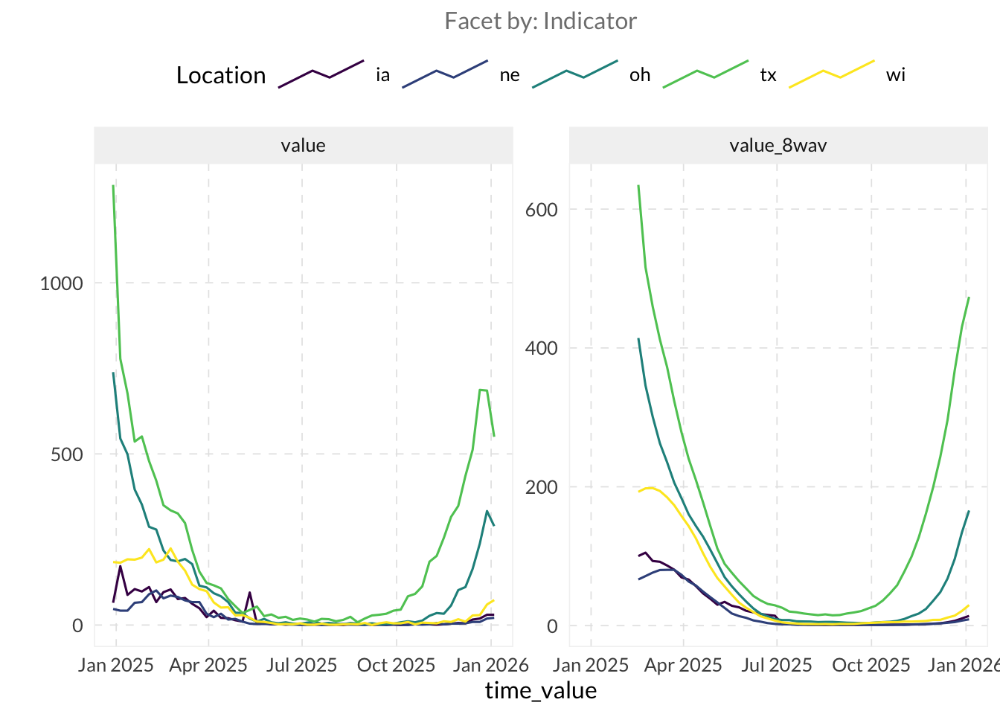
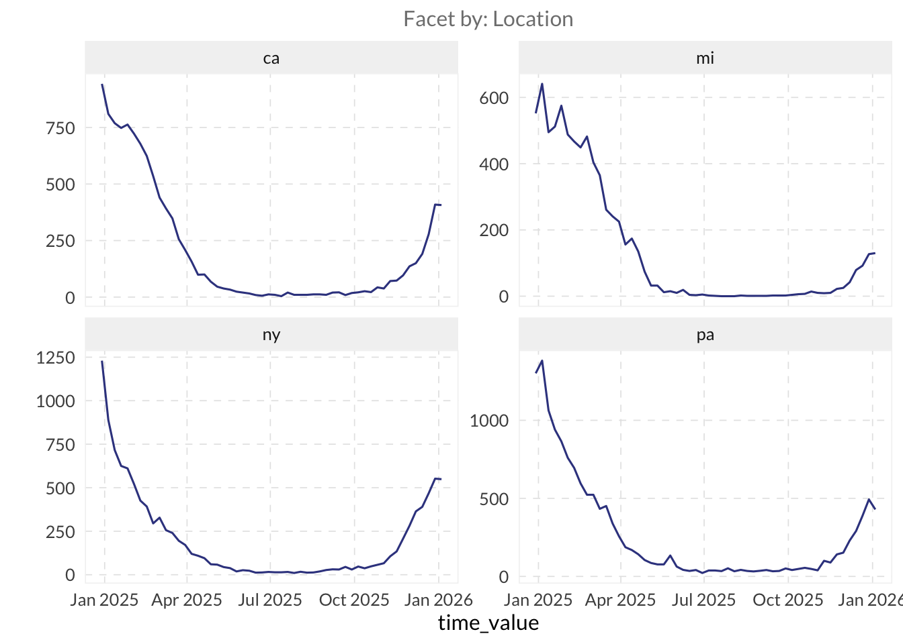
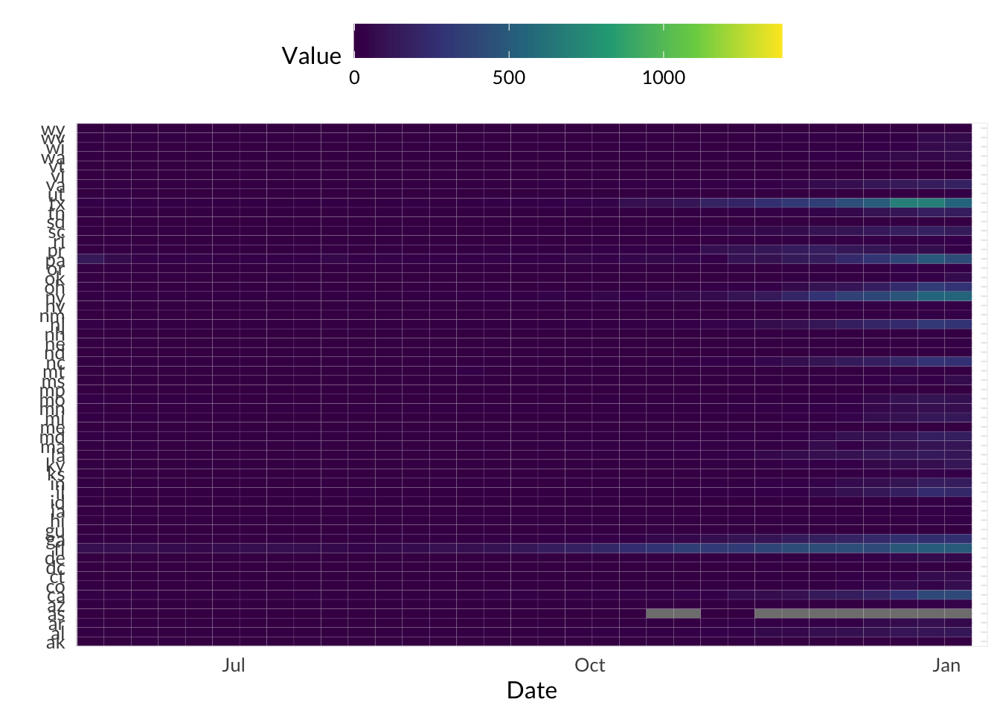
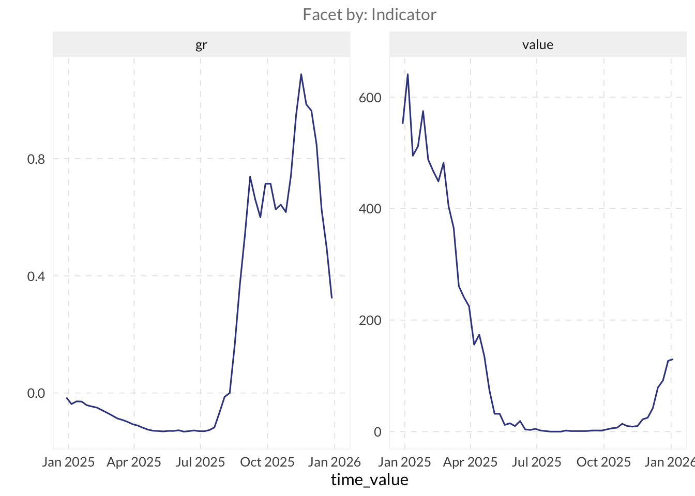
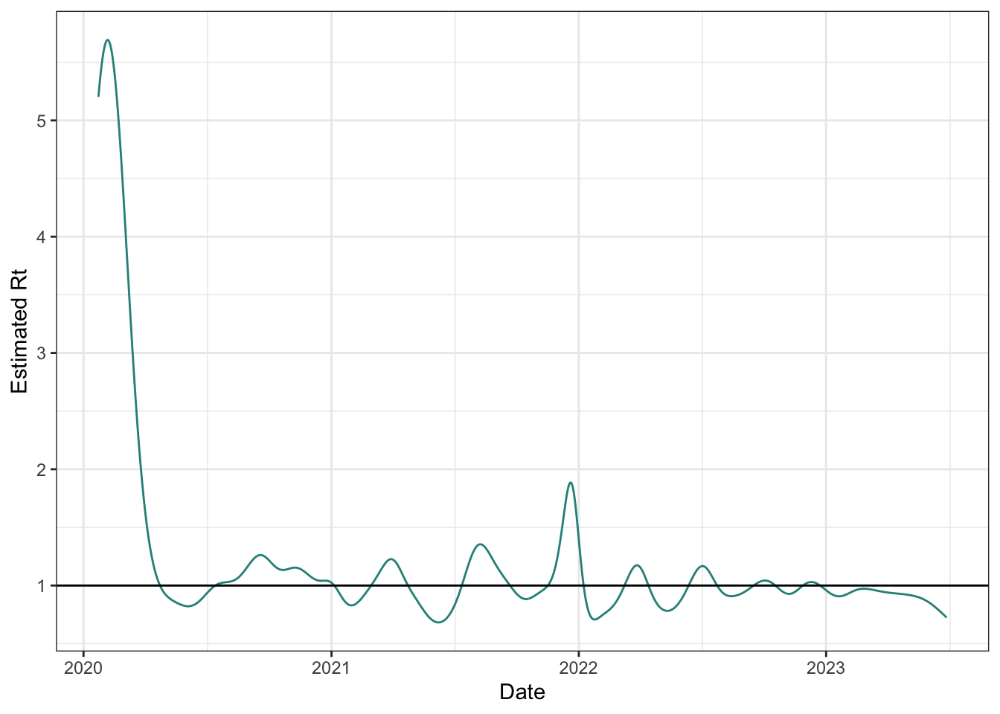
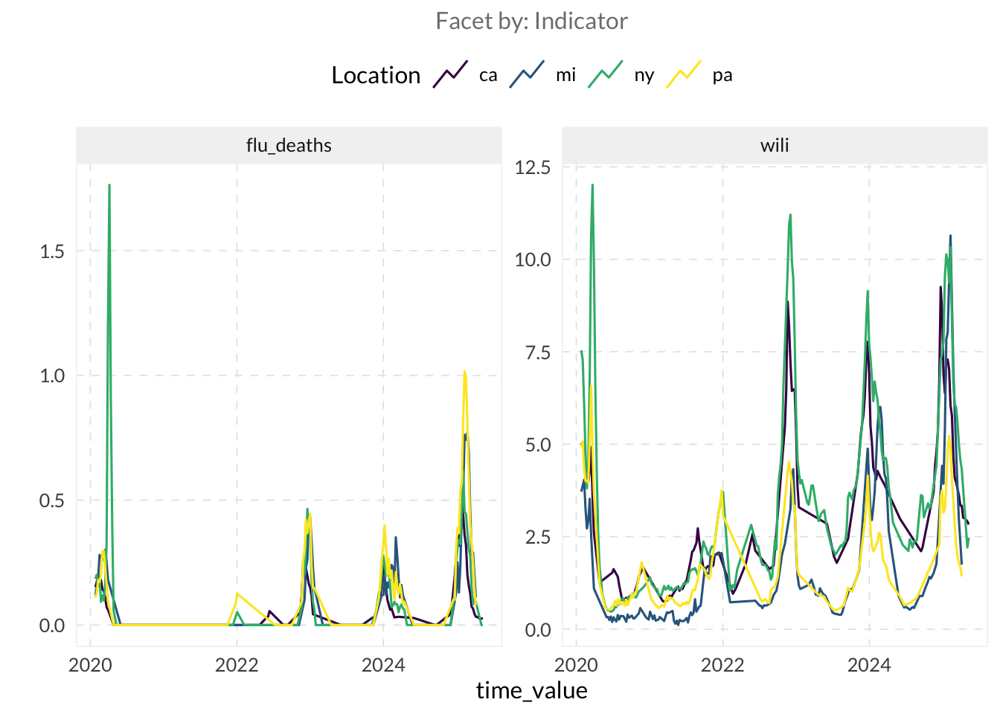
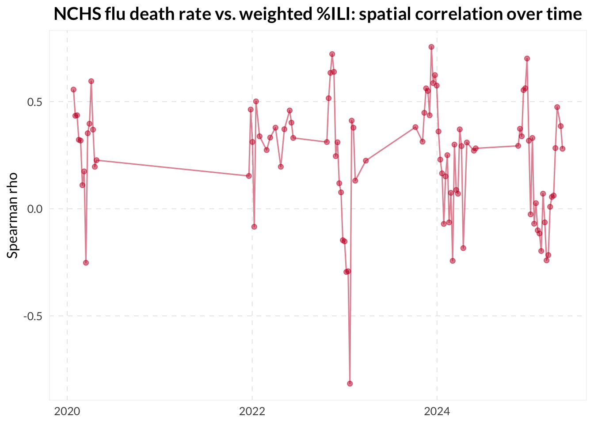
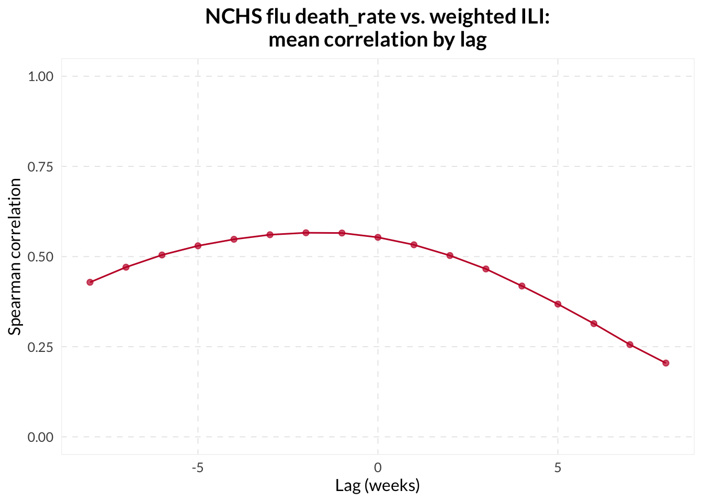
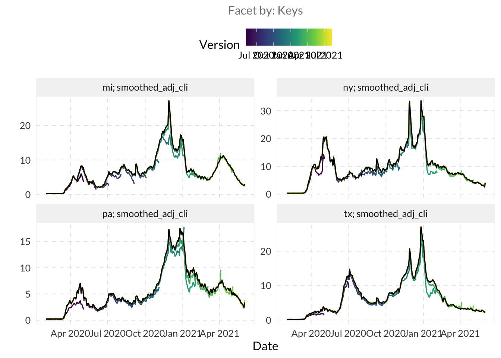
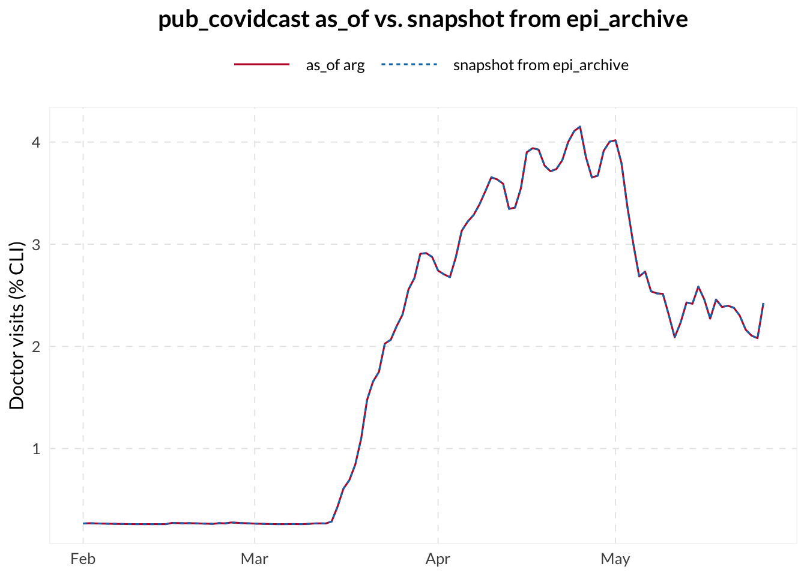

if (!requireNamespace("pak", quietly = TRUE)) install.packages("pak")
if (!requireNamespace("InsightNetApr26", quietly = TRUE)) {
pak::pkg_install("cmu-delphi/InsightNet-apr-2026/InsightNetApr26")
}
InsightNetApr26::verify_setup()
# If pak demands Rtools and you don't have it, you can use this instead:
#
# if (!requireNamespace("remotes", quietly = TRUE)) {
# install.packages("remotes")
# }
# remotes::install_github("cmu-delphi/InsightNet-apr-2026/InsightNetApr26")
# remotes::install_github("cmu-delphi/epidatr")
# remotes::install_github("cmu-delphi/epidatasets")
# remotes::install_github("cmu-delphi/epiprocess")
# remotes::install_github("cmu-delphi/epipredict")
library(epidatr)
library(epiprocess)
library(dplyr)
library(ggplot2)MINI-PROJECT 2: EDA and correlation analysis
The {InsightNetApr26} package ensures all required Delphi tools are installed with the correct versions for this session.
2.1 General Exploratory Data Analysis (EDA) utilities
⭐ Either continue with your data from Mini-Project 1 (in epi_df format) OR select a new data indicator of your choice and transform it to an epi_df using epiprocess. Make sure you pull the data for all states!
For example, we start with NHSN weekly RSV hospital admissions, pulling all states across multiple seasons.
TipHint
The epiprocess documentation and vignettes are available at cmu-delphi.github.io/epiprocess.
epidata_nhsn_state <- pub_covidcast(
source = "nhsn",
signal = "confirmed_admissions_rsv_ew",
geo_type = "state",
time_type = "week",
geo_values = "*",
time_values = epirange(202501, 202601)
) |>
select(geo_value, time_value, value, issue)
edf <- epidata_nhsn_state |>
as_epi_df()- Check out your dataset! Type the object’s name for a quick look. Then use
summary()to view the dataset’s metadata and overall statistics. For information on what each section means, visit https://cmu-delphi.github.io/epiprocess/dev/reference/print.epi_df.html
edfAn `epi_df` object, 3,024 x 4 with metadata:
* geo_type = state
* time_type = week
* as_of = 2026-04-19
Latency (lag between last available observation and epi_df's as_of, by time series):
* lag = 15–23 weeks (see summary() for per-signal details)
# A tibble: 3,024 × 4
geo_value time_value value issue
* <chr> <date> <dbl> <date>
1 ak 2024-12-29 37 2026-04-19
2 al 2024-12-29 171 2026-04-19
3 ar 2024-12-29 108 2026-04-19
4 as 2024-12-29 3 2026-04-19
5 az 2024-12-29 208 2026-04-19
6 ca 2024-12-29 943 2026-04-19
7 co 2024-12-29 168 2026-04-19
8 ct 2024-12-29 204 2026-04-19
9 dc 2024-12-29 3 2026-04-19
10 de 2024-12-29 155 2026-04-19
# ℹ 3,014 more rowssummary(edf)An `epi_df` x, with metadata:
* geo_type = state
* as_of = 2026-04-19
----------
Time range:
* min time value = 2024-12-29 (but some time series start later)
* max time value = 2026-01-04 (but some time series end earlier)
Gaps:
* explicit (non-lag NAs in 1/56 key combinations, affecting 1 signal)
* average rows per time value = 56.00
Latency (lag between last available time_value and epi_df's as_of, by time series):
* value: lag 15–23 weeks (max time 2026-01-04); lagging keys: as (!)
(!): notable latency (lag > 2 weeks; lagging keys)
Note
Look at the “Latency” section in the summary() output. The (!) symbol appears when there is a “notable” lag. For an up-to-date indicator, you would see no warning and typically a lag of only a few days. If your chosen indicator has a notable lag, how does that impact its use for real-time surveillance?
- Use
epi_slide_mean()andepi_slide_sum()to calculate moving averages and weekly totals in a new column of yourepi_df.- Try
.window_sizeand.alignparameters to control the sliding window size and the alignment of the sliding window, respectively.
- Try
TipHint
Because this data has time_type = "week", .window_size must be expressed as a difftime (e.g., as.difftime(3, units = "weeks")).
edf <- edf |>
epi_slide_mean("value", .window_size = as.difftime(3, units = "weeks")) |>
epi_slide_mean("value", .window_size = as.difftime(8, units = "weeks")) |>
epi_slide_mean("value",
.window_size = as.difftime(3, units = "weeks"), .align = "center",
.new_col_names = "value_3wmean_center"
) |>
epi_slide_sum("value", .window_size = as.difftime(4, units = "weeks"))
edf |>
select(geo_value, time_value, value, value_3wav, value_8wav, value_3wmean_center, value_4wsum) |>
print(n = 10)An `epi_df` object, 3,024 x 7 with metadata:
* geo_type = state
* time_type = week
* as_of = 2026-04-19
Latency (lag between last available observation and epi_df's as_of, by time series):
* lag across all time series = 15–28 weeks (see summary() for per-signal details)
# A tibble: 3,024 × 7
geo_value time_value value value_3wav value_8wav value_3wmean_center
<chr> <date> <dbl> <dbl> <dbl> <dbl>
1 ak 2024-12-29 37 NA NA NA
2 ak 2025-01-05 24 NA NA 24.7
3 ak 2025-01-12 13 24.7 NA 19.7
4 ak 2025-01-19 22 19.7 NA 21.7
5 ak 2025-01-26 30 21.7 NA 22.3
6 ak 2025-02-02 15 22.3 NA 19.3
7 ak 2025-02-09 13 19.3 NA 19
8 ak 2025-02-16 29 19 22.9 23
9 ak 2025-02-23 27 23 21.6 25
10 ak 2025-03-02 19 25 21 19.3
# ℹ 3,014 more rows
# ℹ 1 more variable: value_4wsum <dbl>
Note
Plot the different columns you calculated, and compare the results. How does changing the .window_size from 1 to 8 weeks impact the “noise” in your plot? Is there a trade-off between smoothness and time-accuracy?
autoplot(edf, value, value_8wav)
- Use
autoplot()andplot_heatmap()to explore the spatial and temporal trends in the data. autoplot()- Try
.facet_by = "geo_value"to see each location in its own box. - Set
.interactive = TRUEto enable zoom, hovering and data tooltips.
- Try
plot_heatmap()- Change the x-axis range using
+ coord_cartesian()
- Change the x-axis range using
autoplot(edf, value, .facet_by = "geo_value", .facet_filter = geo_value %in% c("ca", "mi", "ny", "pa"))
autoplot(edf, value, .interactive = TRUE, .max_keys = Inf, .facet_filter = geo_value %in% c("ca", "mi", "ny", "pa"))plot_heatmap(edf, value) +
coord_cartesian(xlim = as.Date(c("2025-06-01", "2026-01-01")))
Note
If not included already, try selecting all states and use plot_heatmap() to identify which states show the most synchronous highs or lows of the metric you’re viewing. Can you spot any regional clusters or outliers? Do you see a pattern in where data is most frequently missing?
Estimate the indicator’s relative change using
growth_rate()and plot it side by side usingautoplot().Filter your data to a state of interest (e.g.
"mi") and remove allNAvalues from the columnvalue.Arrange your data by
time_valueand then calculate the growth rate ofvaluein a new column usinggrowth_rate(). - Useggplotto plot both the columnvalueand your growth rate column together in one line plot — Notice anything odd? - Look at the scale ofvaluevs. the scale of your growth rate column — make adjustments to your plot as necessary to view both values.
edf |>
filter(
geo_value == "mi",
!is.na(value)
) |>
mutate(gr = growth_rate(value)) |>
autoplot(value, gr)
Note
What does the growth rate measure? How is it changing as your data changes?
⚔️ Explore rtestim to estimate the effective reproductive number, Rt, using an indicator based on actual case counts. The main entry point is cv_estimate_rt(), which selects the smoothness parameter through cross-validation. Pass it a numeric vector of case counts from a single location.
library(rtestim)
# This example uses the history of real Covid-19 case counts in Canada
# It is available with the rtestim package
mod_rt <- cv_estimate_rt(
observed_counts = cancovid$incident_cases,
x = cancovid$date
)
plot(mod_rt, which_lambda = "lambda.1se")
2.2 Compare two different indicators
⭐ Explore other available indicators with the Delphi EpiPortal, or, follow along with these steps using the NCHS Influenza Deaths (Weekly new, per 100k people) and ILINet’s weighted percent influenza-like illness rates for Pennsylvania.
- Join these two datasets into a single wide format
epi_df.
TipHint
Turn the two sets into individual epi_dfs first, then join them [epiprocess::as_epi_df()].
# NCHS Influenza Deaths: weekly new deaths per 100k
edf_flu_death_rate <- pub_covidcast(
source = "nchs-mortality",
signal = "deaths_flu_incidence_prop",
geo_type = "state",
time_type = "week",
geo_values = "*"
) |>
select(geo_value, time_value, flu_death_rate = value) |>
as_epi_df()
# ILINet: weighted percent influenza-like illness
edf_ili_raw <- pub_fluview(
regions = "al,ak,az,ar,ca,co,ct,de,dc,fl,ga,hi,id,il,in,ia,ks,ky,la,me,md,ma,mi,mn,ms,mo,mt,ne,nv,nh,nj,nm,ny,nc,nd,oh,ok,or,pa,ri,sc,sd,tn,tx,ut,vt,va,wa,wv,wi,wy",
epiweeks = epirange(202004, 202520)
)
edf_ili <- edf_ili_raw |>
select(geo_value = region, time_value = epiweek, wili) |>
as_epi_df()edf_joined <- full_join(
edf_flu_death_rate,
edf_ili,
by = c("geo_value", "time_value")
)
edf_joinedAn `epi_df` object, 16,896 x 4 with metadata:
* geo_type = state
* time_type = week
* as_of = 2026-04-27 08:48:25.888734
Latency (lag between last available observation and epi_df's as_of, by time series):
* lag across all time series = 3–50 weeks (see summary() for per-signal details)
* Empty time series detected
# A tibble: 16,896 × 4
geo_value time_value flu_death_rate wili
<chr> <date> <dbl> <dbl>
1 al 2020-01-26 0.286 9.03
2 az 2020-01-26 0.179 4.43
3 ca 2020-01-26 0.152 4.98
4 ct 2020-01-26 0.337 9.09
5 dc 2020-01-26 0 3.41
6 de 2020-01-26 0 2.60
7 fl 2020-01-26 0.163 NA
8 hi 2020-01-26 0 4.48
9 il 2020-01-26 0.126 6.72
10 ma 2020-01-26 0.203 5.55
# ℹ 16,886 more rows- Use
autoplot()with both indicators selected as parameters to view the data on one plot.
autoplot(edf_joined, flu_death_rate, wili,
.facet_filter = geo_value %in% c("ca", "mi", "ny", "pa"))
Calculate a correlation using
epiprocess::epi_cor().- Set
cor_bytogeo_valueandtime_valueto estimate the correlation over time within the same location (per-location temporal correlation) and across regions at a specific moment (correlation over time). - You can also vary the
method(using"pearson"for linear relationship or"spearman"for ranked-based correlation).
- Set
TipHint
You can find the “correlation” vignettes here.
# Per-location temporal correlation
epi_cor(edf_joined, flu_death_rate, wili,
cor_by = geo_value
)# A tibble: 52 × 2
geo_value cor
<chr> <dbl>
1 ak NA
2 al 0.869
3 ar 0.768
4 az 0.832
5 ca 0.801
6 co 0.821
7 ct 0.775
8 dc NA
9 de 0.434
10 fl 0.558
# ℹ 42 more rowsepi_cor(edf_joined, flu_death_rate, wili,
cor_by = time_value, method = "spearman"
) |>
drop_na()# A tibble: 99 × 2
time_value cor
<date> <dbl>
1 2020-01-26 0.556
2 2020-02-02 0.434
3 2020-02-09 0.436
4 2020-02-16 0.322
5 2020-02-23 0.318
6 2020-03-01 0.11
7 2020-03-08 0.174
8 2020-03-15 -0.252
9 2020-03-22 0.352
10 2020-03-29 0.397
# ℹ 89 more rowsepi_cor(edf_joined, flu_death_rate, wili,
cor_by = geo_value, method = "spearman"
) |>
drop_na()# A tibble: 46 × 2
geo_value cor
<chr> <dbl>
1 al 0.658
2 ar 0.489
3 az 0.696
4 ca 0.899
5 co 0.654
6 ct 0.487
7 de 0.166
8 fl 0.537
9 ga 0.763
10 ia 0.547
# ℹ 36 more rowsUse ggplot2 or any other plotting package to analyze how the correlation changes over time.
cor_spatial <- epi_cor(edf_joined, flu_death_rate, wili,
cor_by = time_value, method = "spearman"
)
cor_spatial |>
drop_na() |>
ggplot(aes(x = time_value, y = cor)) +
geom_line(alpha = 0.5) +
geom_point(alpha = 0.5) +
labs(
x = NULL, y = "Spearman rho",
title = "NCHS flu death rate vs. weighted %ILI: spatial correlation over time"
)
# ^ skipped time values are from NA correlations due to mortality being
# 0 across all locations⚔️ Use the dt1 and dt2 parameters in epi_cor() to find the exact lag that maximizes the correlation between your candidate and guiding indicators. You can even wrap this in a lapply() over a range of lags to build a “lag-lead” visualization of the relationship between the two signals.
lag_summary <- lapply(-8:8, \(lag) {
epi_cor(edf_joined, flu_death_rate, wili,
cor_by = geo_value, dt1 = -lag, method = "spearman"
) |>
mutate(lag = lag)
}) |>
bind_rows() |>
group_by(lag) |>
summarize(
mean_cor = mean(cor, na.rm = TRUE),
q25 = quantile(cor, 0.25, na.rm = TRUE),
q75 = quantile(cor, 0.75, na.rm = TRUE),
.groups = "drop"
)
ggplot(lag_summary, aes(x = lag)) +
geom_line(aes(y = mean_cor)) +
geom_point(aes(y = mean_cor)) +
scale_y_continuous(limits = c(0, 1)) +
labs(
x = "Lag (weeks)", y = "Spearman correlation",
title = "NCHS flu death_rate vs. weighted ILI:\nmean correlation by lag"
)
Note
If you see a high spatial correlation but a low temporal correlation, what does that tell you about the relationship between the two indicators? Is it possible for two signals to be highly correlated in space but not in time?
2.3 Revision behavior - Understanding how data matures over time
⭐ Fetch and visualize the version history of an indicator — you can choose your own indicator, or follow along with the Day-adjusted COVID-related Doctor Visits indicator.
TipHint
For version-aware processing, including revision analysis and modelling, the training data needs to include the revision history. Since we’re using Delphi-hosted data right now, we can fetch data versions from the Delphi Epidata API by specifying issues = "*" in the API call.
archive_raw <- pub_covidcast(
source = "doctor-visits",
signal = "smoothed_adj_cli",
geo_type = "state",
time_type = "day",
geo_values = c("mi", "ny", "tx", "pa"),
time_values = epirange(20200101, 20200601),
issues = "*"
)
# ^ to perform this query, you may need to register for an API key at
# https://docs.google.com/forms/d/e/1FAIpQLSe5i-lgb9hcMVepntMIeEo8LUZUMTUnQD3hbrQI3vSteGsl4w/viewform
# then usethis::edit_r_environ() to open your .Renviron configuration
# file and add the line `DELPHI_EPIDATA_KEY=yourkeyhere` (without
# quotes) in the file and save it, then run
# readRenviron("~/.Renviron") or restart R.- Convert the data into
epi_archiveformat usingas_epi_archive().
TipHint
as_epi_archive() requires a column called version. Since the Delphi Epidata API returns the issue column, you may need to rename this column with rename(version = issue).
archive_data <- archive_raw |>
select(geo_value, time_value, version = issue, value) |>
as_epi_archive()- Plot the data using
autoplot().
TipHint
To view the help file for this method, type ?autoplot.epi_archive in R or visit this link.
autoplot(archive_data, value)
Note
Look at the divergence in the autoplot() lines. Which version tends to be the most “optimistic” or “pessimistic” compared to the final data (in black)? Do you notice any systematic bias in the initial reports?
- “Slice” the archive at a specific version date using
epix_as_of(). Documentation
snapshot_early <- epix_as_of(archive_data, version = as.Date("2020-06-01"))
Note
When you extract a snapshot using epix_as_of(), you are essentially “time-travelling” to see the state of knowledge on that date. If the preliminary values on a date were much lower than the final values, how might that lead to a false sense of security during an emerging surge?
Note
How might this ability to view history and current in a report assist in decision-making around a particular metric? Do you handle this in any particular way at your institution/agency?
⚔️ Instead of fetching the entire history, use the as_of parameter in pub_covidcast() to fetch the data exactly as it was reported on a specific date. Convert it to an epi_df and compare it to the slice you took above.
edf_as_of <- pub_covidcast(
source = "doctor-visits",
signal = "smoothed_adj_cli",
geo_type = "state",
time_type = "day",
geo_values = c("mi", "ny", "tx", "pa"),
time_values = epirange(20200101, 20200601),
as_of = as.Date("2020-06-01")
) |>
as_epi_df()
bind_rows(
edf_as_of |> mutate(version = "as_of arg"),
snapshot_early |> mutate(version = "snapshot from epi_archive")
) |>
filter(geo_value == "pa") |>
ggplot(aes(
x = time_value, y = value,
color = version, lty = version
)) +
geom_line() +
labs(
x = NULL, y = "Doctor visits (% CLI)",
title = "pub_covidcast as_of vs. snapshot from epi_archive",
color = "",
lty = ""
)
- Use
revision_analysis()to explore how signals change across revisions.
TipHint
Use $revision_behavior on the object returned by revision_analysis() to access the summary statistics dataframe for each revision date (i.e. “key”).
rev_result <- revision_analysis(archive_data, value)
rev_result$revision_behavior# A tibble: 488 × 11
time_value geo_value n_revisions min_lag max_lag lag_near_latest spread
<date> <chr> <dbl> <drtn> <drtn> <drtn> <dbl>
1 2020-02-01 mi 17 96 days 129 days 117 days 0.108
2 2020-02-02 mi 17 95 days 128 days 116 days 0.129
3 2020-02-03 mi 17 94 days 127 days 115 days 0.233
4 2020-02-04 mi 17 93 days 126 days 114 days 0.265
5 2020-02-05 mi 17 92 days 125 days 113 days 0.238
6 2020-02-06 mi 17 91 days 124 days 112 days 0.255
7 2020-02-07 mi 17 90 days 123 days 111 days 0.250
8 2020-02-08 mi 17 89 days 122 days 110 days 0.209
9 2020-02-09 mi 17 88 days 121 days 109 days 0.268
10 2020-02-10 mi 17 87 days 120 days 108 days 0.247
# ℹ 478 more rows
# ℹ 4 more variables: rel_spread <dbl>, min_value <dbl>, max_value <dbl>,
# median_value <dbl>
Note
A key metric generated by revision_analysis() is lag_near_latest (often called stabilization lag), which measures the number of days it takes for a data point to “settle” within a reliable threshold (e.g., 20%) of its final backfilled value.
If the average stabilization lag is 20 days, what does that imply for a public health official trying to use yesterday’s data to make a decision? How might you adjust your confidence in a signal based on these maturity metrics?
⚔️ Try out using the within_latest parameter within revision_analysis() to change the reliable threshold value. How does changing that value affect the output value of lag_near_latest?
rev_tight <- revision_analysis(archive_data, value,
within_latest = 0.1
)
rev_loose <- revision_analysis(archive_data, value,
within_latest = 0.3
)
bind_rows(
rev_tight$revision_behavior |> mutate(threshold = "10%"),
rev_result$revision_behavior |> mutate(threshold = "20%"),
rev_loose$revision_behavior |> mutate(threshold = "30%")
) |>
group_by(threshold) |>
summarize(median_lag = median(lag_near_latest, na.rm = TRUE))# A tibble: 3 × 2
threshold median_lag
<chr> <drtn>
1 10% 58.5 days
2 20% 45.5 days
3 30% 39.0 days ⚔️ Use dplyr’s group_by() and summarize() to calculate revision statistics for each location.
rev_result$revision_behavior |>
group_by(geo_value) |>
summarize(
mean_spread = mean(spread, na.rm = TRUE),
median_lag_near_latest = median(lag_near_latest, na.rm = TRUE)
)# A tibble: 4 × 3
geo_value mean_spread median_lag_near_latest
<chr> <dbl> <drtn>
1 mi 0.834 35.5 days
2 ny 2.69 41.5 days
3 pa 0.975 52.5 days
4 tx 0.528 44.5 days